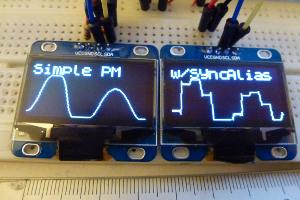

would be great one day to control axoloti patches the way like Futuresonus Parva
SPI/I2C OLED display
yeah, definitely worth keeping an eye on the price of OLED displays.
the cheap ones are quite small still. (I guess same size as on minilogue?)
I will say the parva oled has come under some criticism, some say its too small to read (easily) , and others that its not bright enough. but still looks nice 
I do think, once the resolution increases (as it would for larger oled displays) it makes sense for the oled to also be controlled by a dedicated controller rather than axoloti directly, so makes sense to use something that already has software to drive it. then its just a matter of sending parameters/display data from axoloti.
... and of course, we shouldn't forget axoloti control is still 'in the works' 
gagarin
#9
Is it any estimations when Axoloti control prototype will be ready or it is still in a stage of concept?
mongrol
#12
This is what I do. See the Mongiloti thread.
I use an Adafruit 128x64 1.3" OLED with the ssd1306 chipset. Previously I tried a SPI 1.3" from a random chinese mob and toasted it changing over to i2c (I needed my SPI pins for microsd). I talk to Axo over TX to RX using the Teensy midi library and Hugo's fixed serial patch. No extra components needed (resistors etc). Works great although I do have disconnect issues with Axo and the GUI while developing meaning a power cycle.
I'm playing with a 0"96 128x64 OLED, it is really too small for my eyes, but i really like that they are quite bright whatever the angle of vision.
I have ordered a 1"3... irt would suit my eyes better.
I'm trying to control them directly (without teensy nor duinos) to display text and curves.
I think that by limiting the use cases (font size, alignment with SSD1306 pages) I can optimize the code and avoid to use a 1k buffer on the Axoloti...
mongrol
#14
Here's an object for sending data directly to one of those oleds, courtesy of the Believotron project.
Thanks @mongrol
I did not find a working axo object in the repository, just some C++ code based on the Adafruit library and empty script2 based objects  maybe, i wasn't looking at the right places.
maybe, i wasn't looking at the right places.
Anyway, I have achieved to talk to the SSD1306 and fill its memory 'pages' with bytes.
As I plan to have limited use (text or bargraph or curve), i try to avoid using complete buffering.
I'd like to have a minimal memory and CPU footprint.
I implemented an old Sinclair ZX inspired font I made long ago, with optimised x2 scaling -> ~500 bytes
For my eyes, smaller characters are not practical (0"96 OLED)
I can display 4 lines of 11 characters.

No problem, the SSD1306 is easier to use than i expected (well, that's partly because my characters are aligned on the "pages").
I'll share my little object when it will be decent.
For my personal use, I just need to display chord and note names (parameters for a chord oriented keyboard). With this direct control I won't have to add an Arduino...
At the moment, the object simply have 4 string inlets, one for each line.
Got a 1"3 I2C 128x64 OLED display from Taiwan today.
At first, only the first 8 lines seemed to sort of work (blinked) while the rest of the display was random dots. I browsed the web and it seems that many 128x64 1"3 displays use an almost compatible circuit (SH1106 vs genuine SD1306).
I finally achieved to make it work with slight edits in my code... internet and tech forums are great resources when it comes to this kind of frustrating issues.
Even if it can seem a slight improvement on paper, going from 0.96" to 1.3" greatly improves the readability 
toneburst
#19
I've found the 1.3" displays a lot harder to source than the 0.96" ones.
Maybe that's changed, since I last looked.
a|x
I bought it on Amazon. I found some cheaper ones on AliExpress, but i did not dared to order those...
The 0.96" (16 yellow lines 48 blue lines) and the 1.3" (white) OLED displays with x2 font
{kind=link}
It's quite difficult to avoid buffering when plotting functions or scope displays, but I got an idea, I'll give it a try...
[EDIT 12/12/17]
Seems to work (the scope curve is steppy because its input is a steppy "SixStepsBLISync oscillator).
I added a second 1"3 OLED display and changed its I2C address so that it can be used with the other one.

I made a "double" object that manages both devices in the same thread (using two separate object did not work).
I uploaded the objects in the tiar/HW library folder along with help patches even if they are in experimental stage.
Axoloti Control still in dev?
DragonSF
#22
Don't be afraid of Aliexpress: they are all the same quality. I bought some from Ali and they are all good.
Captain_Burek
#23
Smashed Transistors,
this looks great. If I want to use your objects, exactly what kinds of displays can i buy, i.e. what features/numbers/names am i looking for (never worked with displays before, there weren't any when i got my soldering license...)?
And: Which pins do you connect them to?
Thanks in advance for your help!
Hi @Captain_Burek,
see https://sebiik.github.io/community.axoloti.com.backup/t/official-pin-out-ports-documentation/202/5
Axo Display
PB8 connects to SCL
PB9 connects to SDA
VDD connects to VCC
GND connects to GNDI added two 10k pull up resistors from PB8 and PB9 to VDD
I used these displays:
and
https://www.amazon.com/gp/product/B01N2K3BC9
but it should work with other 128x64 OLED displays based on controllers SH1106 or SSD1306
Tiar / SmashedTransistors Contributions
Captain_Burek
#25
Thanks for the quick response, SmashedTransistors!
Got one OLED working just as planned, 2nd one's in the mail. Much obliged!
mtyas
#26
Just added my first screen on one of my axo-boxes, and thanks to @SmashedTransistors it all worked first time and is still amazing me  This opens up a whole new world, and one of them is to be able to forget things and have interactive reminders, so cool
This opens up a whole new world, and one of them is to be able to forget things and have interactive reminders, so cool